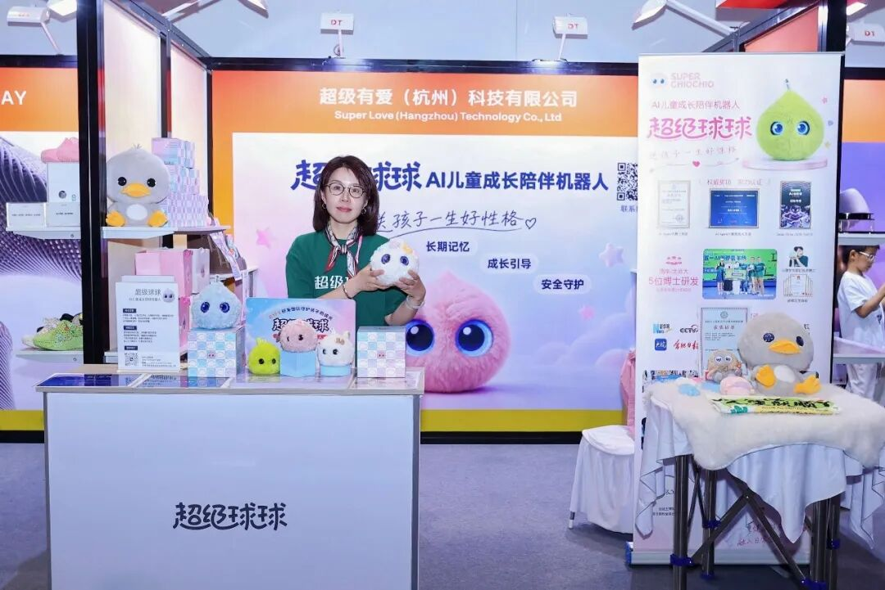
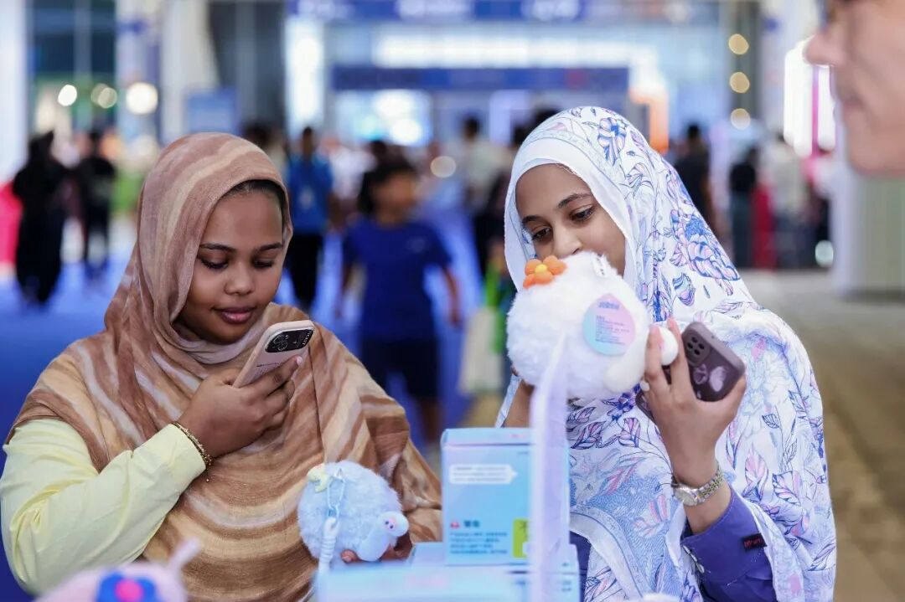
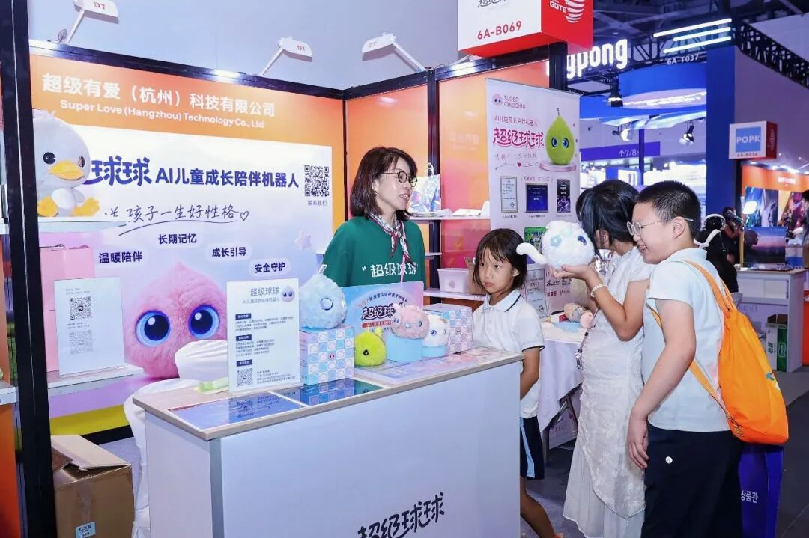
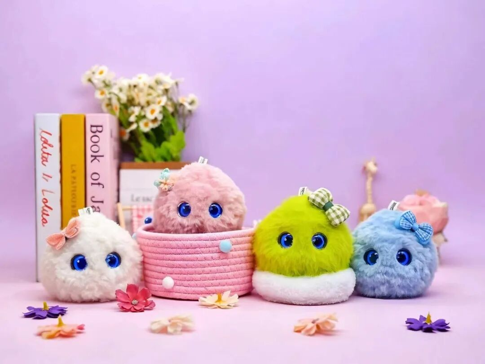
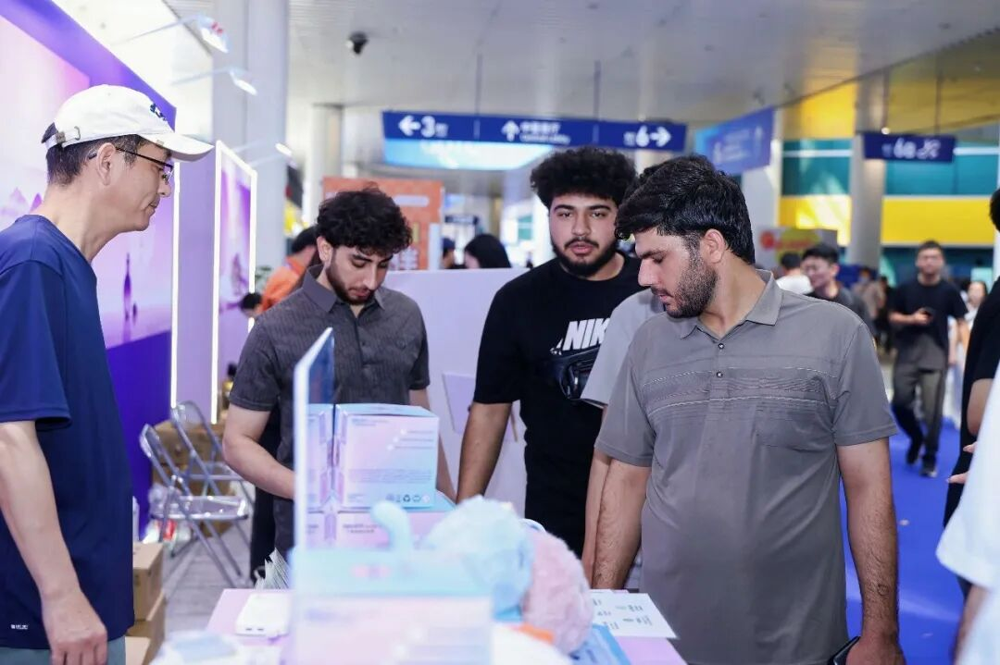
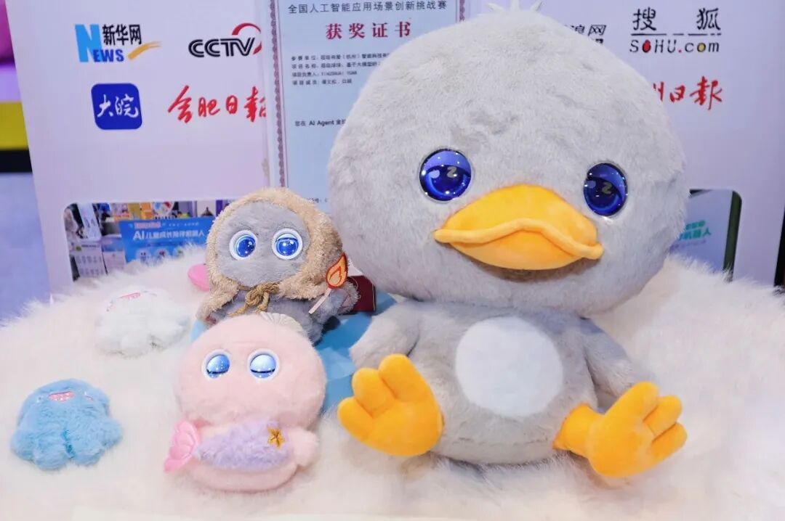
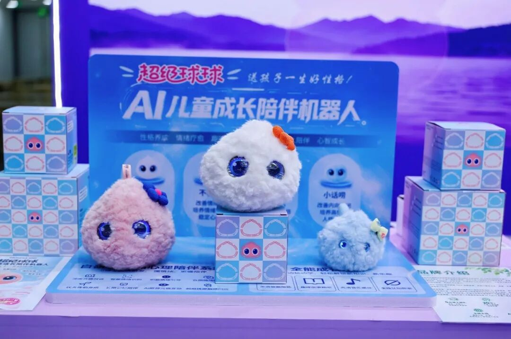

9月的杭州，全球数字贸易的"最强阵容"集结。这一次，超级球球把"有温度的AI陪伴"带到了这场国家级展会现场。
9月23日至27日，第五届全球数字贸易博览会在杭州大会展中心举行。本届数贸会以"在数贸会遇见AI未来"为年度主题，展览总面积达17万平方米，吸引了全球超2000家企业参展，其中人工智能相关企业约占一半——这是我国唯一以数字贸易为主题的国家级、国际性、专业型展会。
超级球球，这款由超级有爱（杭州）智能科技有限公司自主研发的AI儿童成长陪伴机器人，也如约亮相本届数贸会。

01 数贸会：一场关于"AI未来"的全球对话先捋一捋这场展会为什么值得所有AI从业者关注：
规格最高：由浙江省人民政府、商务部共同主办，马来西亚、匈牙利担任主宾国，海南省担任主宾省，来自163个国家和地区的超5万名专业客商齐聚杭州。
AI含量最高：本届数贸会以"人工智能赋能数字贸易"为主线，首次设立Token（词元）专区和AI未来展区，一站式展示算力底座、模型服务、场景应用的AI全产业链；六大国家级人工智能中试基地首次同台，从技术研发、中试验证到产业应用的完整创新闭环清晰可见。
未来感拉满：从量子计算、载人机甲、脑机接口到飞行汽车，一大批全球首发、亚洲首秀、中国首展的新技术、新产品在展馆里集中亮相。展会期间还举办50场重点活动，全球数字贸易创新大赛首次以具身智能为主题。一句话：这里是中国AI走向世界贸易舞台的最前线。

02 超级球球来了：让AI展馆里多一份"心跳"
在满是硬核科技的展馆里，超级球球是一个特别的存在——它不炫参数、不拼算力，它要做的事情只有一件：陪着孩子，好好长大。
超级球球是一款专为3-12岁儿童打造的无屏幕轻量化AI情绪疗愈陪伴机器人。亲肤毛绒的外形、灵动的眼神交互、可触摸感知的柔软身体，加上纯语音交互的低刺激设计——它不是"又一个带屏早教机"，而是一个孩子愿意抱着、愿意说心里话的伙伴。

它的底气来自产品背后"有爱AI心理专属模型"：由20年心理专家郭凯燕博士与清华大学等高校博士团队联合打造，具备精准情绪识别、深度共情对话、长期个性化记忆三大核心能力，构建起"情绪感知→科学评估→正向干预→风险预警"的完整儿童心理服务闭环。
围绕孩子成长中最常见的四种"小烦恼"，超级球球设计了四款性格伙伴：
🐰 玉兔白 · 不拖拉球球："你不拖拉，我不拖拉，咱们都不拖拉。"
💗 治愈粉 · 不暴躁球球："遇事不暴躁，温柔好好说。"
💪 小坚强球球："勇敢不害怕，做个小坚强。"
💙 小话唠球球："敢开口、爱表达，快乐交朋友。"

产品线则有经典款大球球（居家深度陪伴）和精灵版小球球（挂在书包上随身携带）两种形态，覆盖家庭、出行、校园多场景。
03 从CES到WAIC，再到数贸会：球球的2026"出圈"之路
超级球球出现在数贸会，并非偶然。过去一年，这只"球"的足迹已经画满了全球AI舞台的坐标轴：
- CES 2026：赴美参展，探路海外市场；
- CES Asia 2026：正式亮相，收获新加坡、日韩、欧洲及中东多地渠道商关注；
- WAIC 2026世界人工智能大会：入选官方智能伙伴，进驻上海世博展览馆核心展区；
- 第八届进博会：多位中外贵宾现场体验；
- 安徒生博物馆合作：携手丹麦安徒生经典文化，让安徒生童话人物拥有"数字生命"，安徒生系列AI儿童产品全球首发；
- 国际残奥委会主席安德鲁·帕森斯实地测评后点赞："超级球球提供了全天候无压力的情绪出口，是兼具技术创新与人文温度的科创成果。"
奖项同样拿到了手软：AI Agent 2025大赛三等奖及"最具人文温度奖"、创业邦"2025值得关注的AI创变者"、全国人工智能应用场景创新挑战赛奖项、杭州文三AI TED科技路演"最受欢迎奖"……在国内持续突破的同时，2026 年完成京东、抖音国内首发后，同步启动新加坡全球首发。

04 为什么是数贸会？为什么是现在？
本届数贸会反复强调一个判断：人工智能的价值，正在从"提升效率"走向"服务人的全面发展"。
这正是超级球球一直在回答的命题。当AI越来越深入地进入孩子的成长环境，它究竟应该承担怎样的角色？超级有爱的答案是：技术决定AI能做什么，而文化决定我们希望AI成为什么。
儿童心理健康是一个全球共同关注的民生议题。超级球球把AI算法与专业儿童心理学深度结合，不仅服务普通家庭，还面向孤独症儿童、残障儿童、大病住院儿童等群体提供适配方案，相关公益服务已在多地社区、特教机构常态化落地。

在数贸会这个国家级舞台上，超级球球想展示的不只是一款产品，更是一种可能性：AI可以是有心跳的、有记忆的、有温度的。

关于超级有爱
超级有爱（杭州）智能科技有限公司是一家专注于人工智能在情绪健康、心理陪伴与儿童成长领域创新应用的原生AI科技企业，总部位于杭州未来科技城（梦想小镇）。核心研发团队汇聚清华大学、北京师范大学等国内高校及海外名校背景人才，由多位博士参与研发。旗下核心产品"超级球球"是AI儿童成长陪伴机器人，以"用AI让心理健康融入日常生活"为品牌使命，致力于让每个生命的情绪陪伴触手可及。